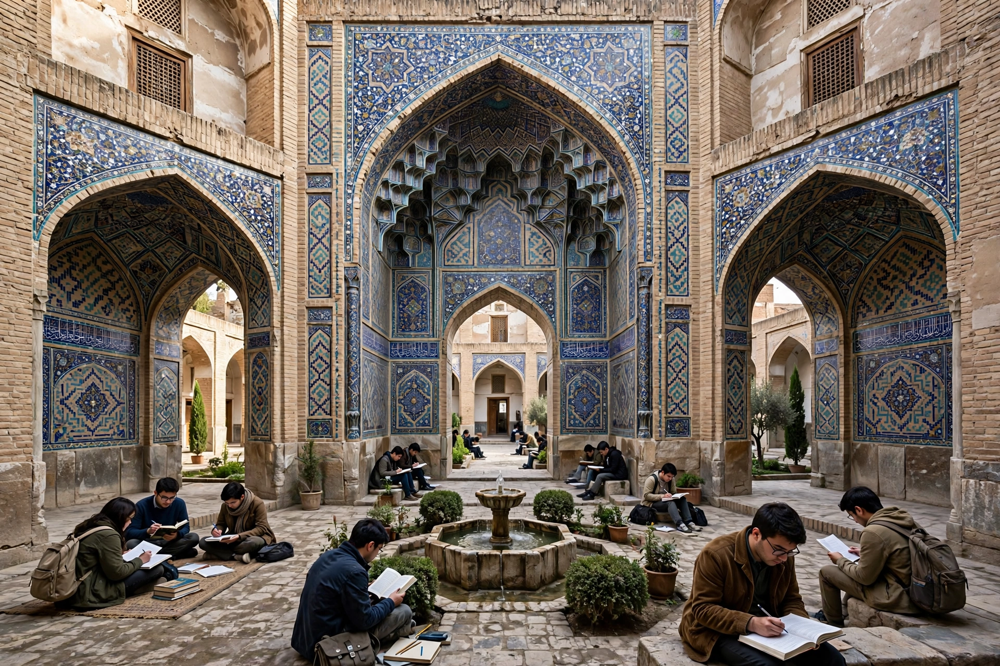

| Madrasa | |
|---|---|
| Arabic | مدرسة (madrasa) |
| Meaning | "place where learning is done" |
| Type | Educational institution |
| Region | Muslim world |
| Flourished | 9th century – present |
A madrasa (Arabic: مدرسة, romanized: madrasa, pl. madāris) is an educational institution for the study of Islam and the Islamic sciences, though in the medieval period its curriculum also encompassed subjects such as literature, astronomy, mathematics and philosophy. In the modern usage the term can refer to any type of school — religious or secular — in Arabic-speaking countries, but in English it most often denotes a specifically Islamic college of learning.

The word derives from the Arabic root d-r-s (درس), "to learn" or "to study", with the prefix ma- denoting a place: madrasa is thus literally "a place where learning is done". It is related to the Hebrew midrash, a house of study.
Early Islamic education took place in mosques, but by the 9th and 10th centuries purpose-built teaching institutions had appeared in Khurasan and Transoxiana. The madrasa was systematised and endowed on a grand scale by the Seljuk vizier Nizam al-Mulk, who founded the famous Nezamiyeh network in the 11th century, including the great madrasa of Baghdad where the theologian al-Ghazali taught. Funded through charitable endowments (waqf), madrasas provided salaried professors, stipends and lodging for students, and libraries.
From the Islamic heartlands the institution spread westward to al-Andalus and the Maghreb — the University of al-Qarawiyyin in Fez (founded 859 as a mosque school) is often cited as one of the oldest existing educational institutions in the world — and eastward into India, where madrasas became central to Muslim scholarship under the Delhi Sultanate and the Mughal Empire.
The classic madrasa plan organises teaching and residential rooms around a central courtyard, frequently with four monumental vaulted halls (iwans) opening onto it, one on each side — the "four-iwan" scheme perfected in Persia. A prayer hall or mosque, the professor's lecture rooms, and cells for students completed the complex, usually richly decorated with tilework, calligraphy and carved stucco.
The core curriculum centred on the Qur'an, hadith (traditions of the Prophet), fiqh (jurisprudence), Arabic grammar and rhetoric, logic and theology (kalam). The "rational sciences" — mathematics, astronomy, medicine and philosophy — were taught in many madrasas, particularly in the earlier centuries, though their place varied by region and period. Students who completed the course received an ijaza, a licence to transmit a text or teach a subject.
Islamic architecture · Waqf · Hawza · University of al-Qarawiyyin